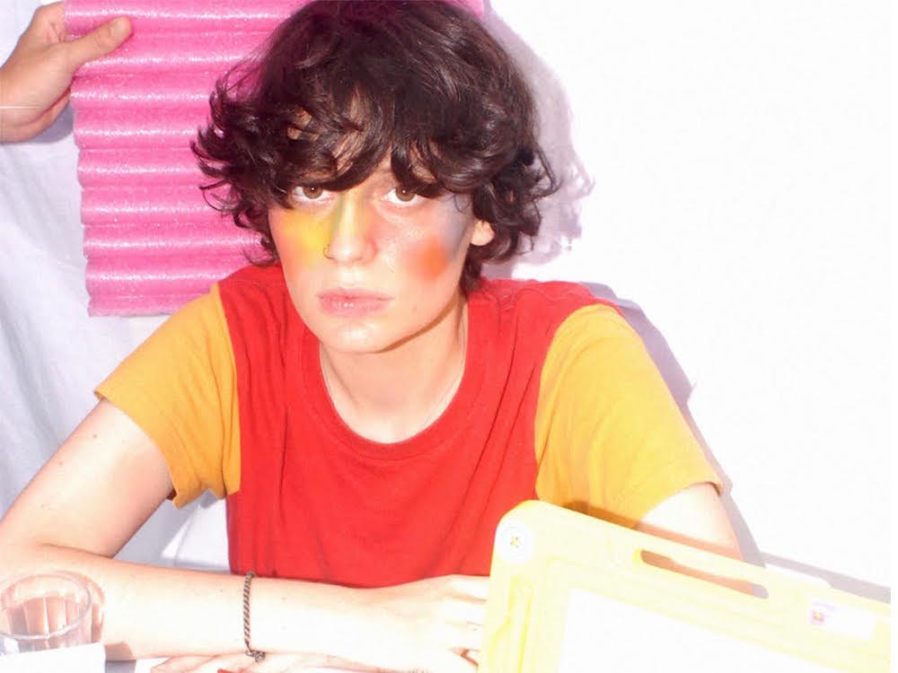
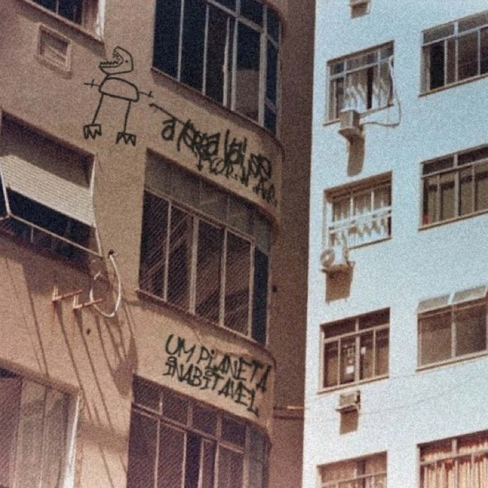
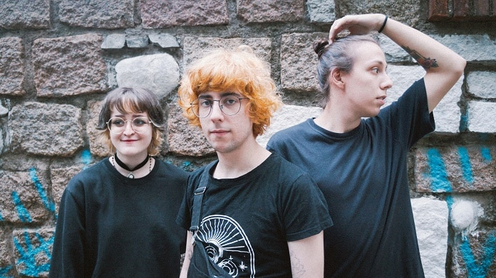
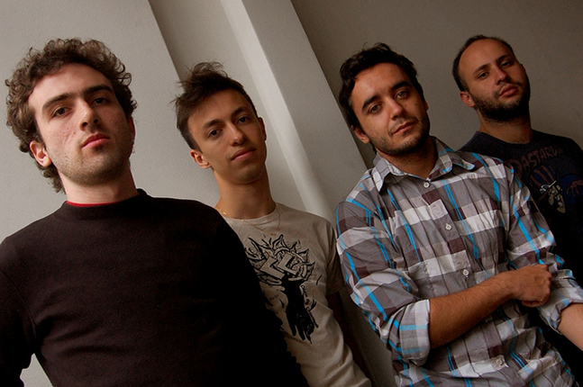
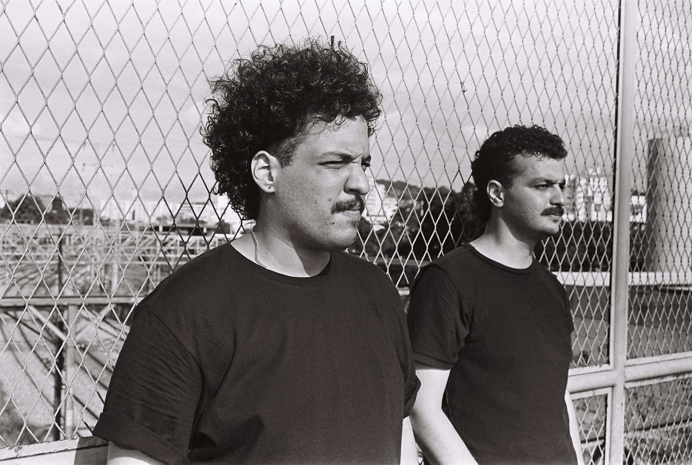
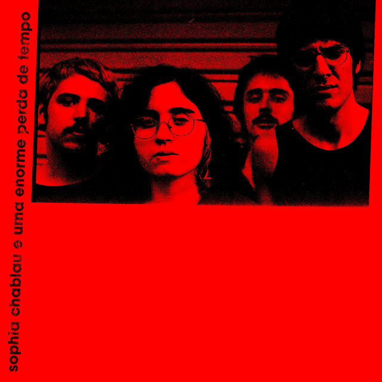

Ana Frango Elétrico, nome artístico de Ana Faria Fainguelernt, é uma personalidade brasileira que atua como artista de canto, composição, pintura e poesia. Em 2018, lançou Mormaço Queima, seu primeiro trabalho em estúdio.

A Terra Vai se Tornar um Planeta Inabitável é um projeto por Zablonski, João, Eduardo e Caio são um projeto de rock, shoegaze e experimental que fazem música de longe. O grupo faz parte do movimento ''nata''.

Bella e o Olmo da Bruxa é uma banda de rock alternativo gaúcha proveniente da capital, Porto Alegre. Formada originalmente em 2015 por Felipe Pacheco, Julia Garcia, Gabriel Orling e Ana Clara Galli.

Lupe de lupe é composta por Gustavo, Jonathan, Renan e Vitor, uma banda de loud-rock ou noise-pop ou punk experimental de Belo Horizonte. O grupo faz parte do movimento "Geração Perdida de Minas Gerais".

A gorduratrans se formou em 2015, após uma conturbada ruptura com a banda que tocavam juntos, Felipe Aguiar e Luiz Felipe Marinho decidiram criar a dupla Gorduratrans. A vontade de ambos sempre foi de experimentar o gênero shoegaze.

Sophia Chablau e Uma Enorme Perda de Tempo é uma banda brasileira de indie rock, indie pop, rock psicodélico e avante-garde. Nascida em 2019 em São Paulo, a formação original é Sophia Chablau, Téo Serson, Theo Ceccato e Vicente Tassara.